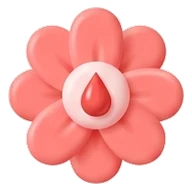

Sikl
TaxminiyHayz kunlari qayd etiladi, qolgani hisoblanadi. Qayd etilgan kun to'ldirilgan, taxmin qilingani faqat konturli — rang hech qachon yagona belgi emas.
12345
67891011
1213141516
171819202122232425262728
Hayz · 5 kun
Unumdor oyna · 12–16
Bugun · 14-kun
Lyuteal · taxminiy